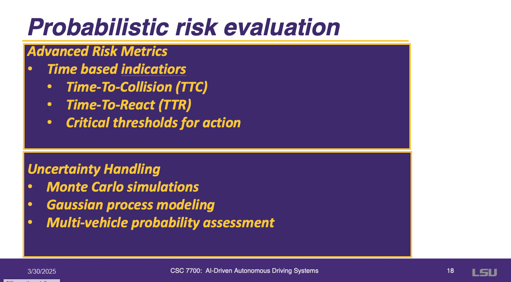
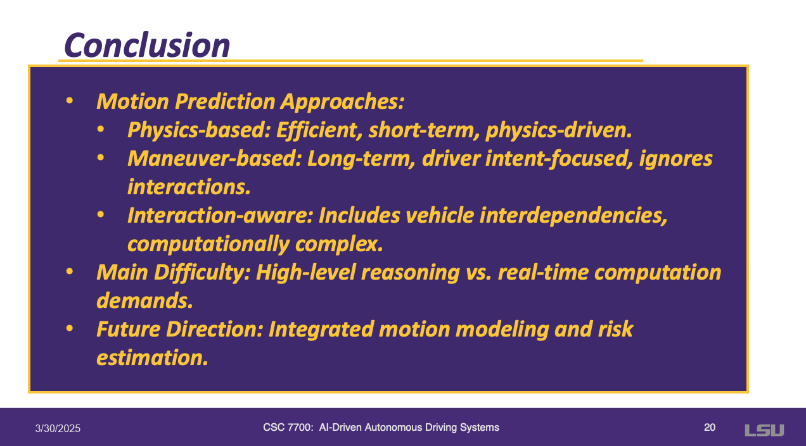

Summary of the Paper
The paper presents a comprehensive survey of motion prediction and risk assessment techniques for intelligent vehicles, covering physics-based models, maneuver-based models, and interaction-aware models. It also discusses risk assessment methods, including binary collision prediction, probabilistic risk evaluation, and risk estimation in driving scenarios.
Slide 3: Introduction
This slide highlights safety as the foundational concern for autonomous and advanced driver-assistance systems (ADAS). It emphasizes that fully autonomous vehicles depend on robust safety measures, given the rising significance of automated transportation. The presentation defines risk in motion as the product of likelihood and severity, requiring precise models to handle dynamic traffic conditions and multi-vehicle scenarios. Real-time decision-making and predictive capabilities are crucial for addressing these complex challenges in AI-driven autonomous driving systems.
Slide 4: Three Approaches to Modeling Vehicle and Driver Behavior
This slide compares three approaches to modeling vehicle and driver behavior in autonomous driving: physics-based models that rely on fundamental motion laws and techniques like Kalman filters and Monte Carlo methods; maneuver-based models that incorporate driver intentions and contextual cues using methods such as hidden Markov models, clustering, and reinforcement learning; and interaction-aware models that account for social rules and inter-vehicle communication with tools like coupled HMMs and rule-based systems, highlighting a progression from basic kinematic predictions to complex, socially informed decision-making.
Slide 5: Physics-Based Models
This slide focuses on the fundamentals of physics-based motion models, detailing three main categories—evolution models for describing how vehicles move, trajectory prediction for determining where they will go, and acknowledging the models’ limitations. Key components include control inputs (steering, acceleration), vehicle properties (weight, dimensions), and external conditions (road friction, surface type), all of which influence the selection of an appropriate model. Finally, considerations such as application requirements and computational complexity highlight the trade-offs inherent in building accurate and efficient physics-based systems for autonomous driving.
Slide 6: Evolution Models
This slide highlights dynamic “bicycle” models as simplified representations of vehicle motion, focusing on front-wheel drive mechanics and the physical forces affecting vehicle movement. It emphasizes their utility for control applications, especially when considering turning and yaw dynamics. The kinematic models discussed include Constant Velocity (CV) for straight-line motion, Constant Acceleration (CA) for linear acceleration, Constant Turn Rate and Velocity (CTRV) which adds yaw angle, and Constant Turn Rate and Acceleration (CTRA) that combines both turn and speed changes.
Slide 7: Trajectory Prediction
This slide presents two main approaches to trajectory prediction. Single Trajectory Simulation applies evolution models directly, offering computational efficiency and real-time performance but limited to short < 1 second forecasts. Meanwhile, Gaussian Noise Simulation and Kalman Filtering employ a two-step prediction-update process, combining predicted states with sensor measurements to produce a mean trajectory estimate along with uncertainty measures.
Slide 8: Trajectory Prediction
This slide highlights Monte Carlo Simulation as a trajectory prediction method that uses random sampling to model multiple possible vehicle paths, factoring in road constraints to generate a distribution of potential trajectories. This approach offers flexibility and robustness by considering various uncertainties in the environment, ultimately producing a probabilistic view of where the vehicle could travel.
Slide 9: Limitations of Physics-Based Models
This slide highlights several limitations and challenges of physics-based models (PBM) in autonomous driving. First, they are mainly effective for very short time horizons (under one second) and cannot account for complex maneuvers or external influences. Additionally, these models only consider the vehicle’s physical properties, ignoring driver intentions and behavioral changes. Finally, practical challenges include the trade-off between computational efficiency and accuracy, as well as the complexity of handling uncertainty in real-world scenarios.
Slide 10: Maneuver-Based Motion Models
This slide focuses on maneuver-based motion models, viewing vehicles as independent entities whose movement is composed of skilled maneuvers. Two main approaches are outlined: Prototype Trajectories, which clusters observed vehicle paths from real traffic data into typical motion patterns (often color-coded for visualization), and Maneuver Intention Estimation, which aims to predict the specific maneuvers a driver will perform. These methods collectively capture how real-world driving unfolds as a sequence of maneuvers, enabling more accurate motion prediction than purely physics-based models.
Slide 11: Prototype Trajectories

This slide discusses prototype trajectories as a way to capture representative driving patterns, starting with statistical prototypes (mean and standard deviation paths) and extending to advanced methods like Gaussian Processes (GPs) and topology learning networks. Implementation often involves matching observed trajectories to known prototypes using distance metrics, probability distribution matching, or a mixture of motion patterns. However, there are notable limitations: rigid time dependencies, the high computational cost of GPs (O(n³)), poor handling of waiting periods, and the need for layout-specific training.
Slide 12: Maneuver Intention Estimation
Maneuver intention estimation predicts a driver’s intended actions and offers more flexibility than trajectory prototypes, adapting more effectively to new layouts. Estimation methods include heuristic approaches, machine learning techniques (such as SVM, RVM, MLP), and hidden Markov models for analyzing event sequences. Key features informing these predictions include vehicle state (speed and position), road context (geometry and rules), and driver behavior (signals and driving style), ultimately enabling more accurate and adaptive maneuver prediction.
Slide 13: Maneuver Intention Estimation
This table provides a comparative overview of various studies on maneuver intention estimation at road intersections, focusing on how different methods (ranging from heuristics and rule-based approaches to advanced machine learning techniques like SVM, HMM, and logistic regression) predict maneuvers such as stopping, going straight, turning, or changing lanes. Each study leverages distinct features—like speed, steering angle, traffic signal state, and vehicle position—to model driver behavior in intersection scenarios. Overall, the table illustrates how simpler heuristic models use a small set of cues, whereas more sophisticated methods integrate multiple signals and probabilistic modeling to improve prediction accuracy and robustness.
Slide 14: Maneuver Execution & Limitations
This slide outlines various methods for maneuver execution—ranging from deterministic control to probabilistic approaches like Gaussian Processes (GPs) and planning algorithms such as Rapidly-exploring Random Trees (RRTs)—and discusses implementation options that include single trajectory generation, multiple trajectory sampling, and using reachable sets (either stochastic or geometric). It also highlights key limitations, such as assumptions of independent vehicle movement, inadequate handling of inter-vehicle dependencies, difficulties in managing priority rules, and challenges in risk assessment, underscoring the complexity of executing maneuvers safely and efficiently in real-world autonomous driving scenarios.
Slide 15: Interaction-Aware Motion Models
Interaction-aware motion models account for multi-vehicle interactions, collision avoidance, and real-time adaptation. One approach uses a library of known trajectory prototypes and matching algorithms, penalizing unsafe paths and enforcing collision-free maneuvers, though it cannot model direct influences between vehicles and remains limited to known patterns. Another approach employs dynamic Bayesian networks (such as coupled HMMs) with asymmetric dependencies and log-linear combinations, integrating traffic rules and context to predict maneuvers more accurately. Despite these advances, interaction-aware models often face high computational complexity (scaling with the number of vehicles) and can struggle with particularly complex traffic scenarios.
Slide 16: Interaction-Aware Motion Models
This figure illustrates how an interaction-aware motion model can predict the yellow vehicle’s trajectory in response to surrounding traffic. By recognizing that the blue cars have the right-of-way, the model shows the yellow car slowing or stopping to yield. This highlights the model’s ability to account for traffic rules and the actions of multiple vehicles, resulting in more realistic and safer motion predictions.
Slide 17: Risk Assessment
This slide distinguishes between two primary perspectives on risk assessment. The classical approach focuses on direct collision prediction—whether vehicles will physically collide—and assesses the potential harm. In contrast, the modern approach incorporates behavioral risk by asking if something unexpected might occur, looking beyond immediate physical conflicts to capture the broader complexity of real-world driving situations.
Slide 18: Binary Collision Prediction
This slide outlines binary collision prediction methods, which involve straightforward yes/no assessments of potential crashes. Techniques include simple intersection checks, linear trajectory analysis, and shape-based detection (e.g., polygons or ellipses) to determine when a collision becomes unavoidable. These methods are especially useful for real-time applications such as emergency braking decisions, basic safety systems, and other scenarios where rapid, definitive collision alerts are needed.
Slide 19: Probabilistic Risk Evaluation

This slide discusses probabilistic approaches to risk evaluation in autonomous driving, focusing on time-based indicators such as Time-to-Collision (TTC) and Time-to-React (TTR), as well as critical thresholds that prompt intervention. It also covers methods for handling uncertainty, including Monte Carlo simulations, Gaussian process modeling, and multi-vehicle probability assessments, all of which help capture the range of potential outcomes and enhance the reliability of collision avoidance and safety systems.
Slide 20: Risk Estimation in Driving Scenarios

This slide outlines three main strategies for risk estimation in driving scenarios. Trajectory prediction involves forecasting future vehicle paths to identify potential collisions. Behavior deviation methods focus on detecting unusual or unexpected actions—defined either by established rules or learned from real-world data—and flagging them as risks (e.g., running a red light). Finally, conflicting maneuver detection uses traffic rules to identify incompatible actions and compares a vehicle’s intended maneuvers with expected norms, thereby recognizing potential safety hazards.
Slide 21: Conclusions

This concluding slide highlights three primary motion prediction approaches:
- Physics-Based Models: Provide short-term, physics-driven predictions.
- Maneuver-Based Models: Incorporate driver intent over longer horizons.
- Interaction-Aware Models: Account for interdependencies among multiple vehicles, albeit with greater computational complexity.
A key challenge is balancing high-level reasoning with the need for real-time performance. Looking ahead, the focus is on developing integrated motion modeling and risk estimation techniques that merge these approaches to ensure both accurate predictions and safe decision-making in autonomous driving systems.
Slide 22: Discussion
This slide presents three key discussion points for autonomous driving risk assessment and system design:
- Behavioral Risk Assessment at Level 5 Autonomy: Explores how risk evaluation might evolve when there are no human drivers to establish 'normal' behavior patterns.
- Balancing Safety and Traffic Flow: Considers whether focusing solely on Time-To-Collision (TTC) and collision avoidance could lead to overly cautious driving, causing gridlock, and discusses how to reconcile safety with efficiency.
- Time-To-React (TTR) vs. Time-To-Collision (TTC): Examines how incorporating TTR alongside TTC influences emergency braking system design, particularly regarding the timing and aggressiveness of interventions.
Discussion and Questions
Question 1: Is the system intended for prediction or planning?
Aleksandar: The system is designed solely for prediction—not for planning. It notifies the driver when a collision is imminent.
Professor: Highlighted that physical models alone fall short because they do not consider the driver’s intent.
Question 2: How are modern vehicles implementing these models?
Aleksandar: Modern vehicles incorporate around 30 different models simultaneously. While physics-based models are crucial for pinpointing errors, they are complemented by models trained to predict specific driver intentions.
Question 3: Do interaction-aware models help in avoiding collisions?
Aleksandar: Yes, by integrating additional information, interaction-aware models enhance prediction accuracy and help prevent collisions.
Question 4: How do regression and classification models contribute, and is there merit in combining them?
Aleksandar: Regression models predict the vehicle’s path, whereas classification models learn the expected behavior. Combining these approaches has been attempted and could leverage the strengths of both.
Discussion Points:
Classmates: Emphasized that traffic rules and driver expectations remain constant, even with AI in the driver’s seat.
Professor: Noted that without human drivers, gathering 'normal' behavior data becomes challenging, and training AI based on human responses could lead to safer outcomes if the AI mimics established patterns rather than creating entirely new ones.
Classmates: Discussed that risk assessment methodologies will change with higher levels of autonomy, possibly requiring new norms and continuous re-evaluation.
Professor: Added that the definition of Level 5 autonomy remains uncertain and may eventually lead to systems with capabilities beyond current control.
George: Raised concerns that emergency braking systems could introduce security vulnerabilities, potentially opening the door to attacks.
{kind=link}
{kind=link}
{kind=link}
{kind=link}
{kind=link}
{kind=link}
{kind=link}
{kind=link}
{kind=link}
{kind=link}
{kind=link}
{kind=link}
{kind=link}
{kind=link}
{kind=link}
{kind=link}
{kind=link}
{kind=link}